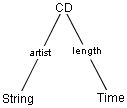

|
toc |
install |
usage |
language |
examples |
ref |
api
|
This is a discussion of the 3 basic data types and their respectively generated code. vcg diagrams are used for visualization.
We call a data type which contains different elements a record. Consider a private CD database as example. We want the CD to store two values, the artist as a string and the length as an object of the Java class Time. Therefore we have a record with two elements and the specification and visualization would look like that.
package cdDataBase; CD::= String Time |
With the package cdDataBase command we make our class member of the cdDataBase package. The package command is not mandatory. You can generate classes which aren't members of a package.
You can see, the specification of a record is very simple. We just specify that the class CD should have two members, one of object String and one of Time. We take a look on part of the code classgen generates for the CD class.
package cdDataBase;
public class CD {
private String string;
private Time time;
public CD (String string, Time time) {
this.string = string;
this.time = time;
}
public void setString(String string) {
this.string = string;
}
...
public Time getTime() {
return time;
}
public String toString() {
...
}
}
Seems like everything is like we wanted it to be. The class is called CD, it is in the package cdDataBase, it has two instance variables (String, Time), the corresponding get/set-methods, a constructor and a toString()-method. There is only one problem, the String element which should hold the artist hasn't got a very intuitive variable name. Its simply called string. Here we can use selectors. We can specify the data type like that (we omit the package command from now on).
CD::= string:artist
time:length
|  |
We now explicitly specified the selectors (which will be the names of the variables) and called it artist and length. As you saw in the last example you needn't have to do it. If you don't specify the selector, classgen generates one of its own. As we hoped we get the following code.
public class CD {
private String artist;
private Time length;
public CD (String artist, Time length) {
this.artist = artist;
this.length = length;
}
public String getArtist() {
...
}
Taking a closer look you will see that we made another change to the specification. We changed the writing of the name of the elements to lower case. classgen tries to follow the Java naming conventions and changes the first letter of class names to upper case.
This leads us to a slightly different notation if you like to use Java primitives like int or boolean which begin with a lower case letter. If you surround a specifier with double quotes classgen doesn't do any changes to the case. Suppose we want to add another element to our CD to store a CD number. We like to use a int and the specification looks like this.
CD::= string:artist
time:length
"int":number
|
The beginning of the code goes like this
public class CD {
private String artist;
private Time length;
private int number;
...
}
Our example deals with structures used by layout algorithms (like the algorithms of TeX). Common layout algorithms use boxes to arrange the content on a page or screen. For our example we use three kinds of boxes, a horizontal box (HBox), a vertical box (VBox) and a empty box (EmptyBox). HBox and VBox can again contain boxes, EmptyBoxess cannot. We start with this basic example and extend it step by step to explain all the features of variants.
Box::= {HBox}
| {VBox}
| {EmptyBox}
|
Let's take a look at the code first. classgen generated 4 files Box.java, HBox.java, VBox.java and EmptyBox.java, where Box is the abstract base class for HBox, VBox and EmptyBox.
Box.java
public abstract class Box {
public String toString() {
return print("");
}
public abstract String
print(String tab);
}
|
VBox.java
public class VBox extends Box {
public VBox () {
}
public String
print(String tab) {
...
}
}
|
HBox.java
public class HBox extends Box {
public HBox () {
}
public String
print(String tab) {
...
}
}
|
EmptyBox.java
public class EmptyBox extends Box {
public EmptyBox () {
}
public String
print(String tab) {
...
}
}
|
Since the boxes don't contain any information there rather useless. A HBox should have an int element to store its width. A VBox should have an int element to store its height and EmptyBox should store both values. Furthermore HBox and VBox can contain another Box. Implementing this is easy.
Box::= {HBox}
"int":width
Box:childBox
| {VBox}
"int":height
Box:childBox
| {EmptyBox}
"int":width
"int":height
|
The new HBox class has an int variable to store its width and contains another box the, childBox. Code for the other boxes looks similar. EmptyBox has two int variables and no childBox.
public class HBox extends Box {
private int width;
private Box childBox;
public HBox (int width, Box childBox) {
...
}
public int getWidth() {
return width;
}
...
}
Back to our CD database example. A CD has more than one track, so we could not use records for storing the tracks, especially because we don't know the number of tracks. If we have an object which has references to many object of the same type we use lists.
The implementation of a list type with classgen is straight-forward. We use the *-symbol to create lists and display them with double lines.
TrackList::= Track* |
This means TrackList can contain objects of the class Track. classgen implements sequences with java.util.vector. It generates on file TrackList.java which has a private Vector called items to store the Tracks. There are several convenience methods to access the items.
import java.util.Vector;
import java.util.Enumeration;
public class TrackList {
private Vector items;
public TrackList() { items = new Vector(); }
public TrackList(Track anItem) {
this();
append(anItem);
}
public TrackList append(Track anItem) {
if (anItem == null) return this;
items.addElement(anItem);
return this;
}
public Enumeration elements() {
return items.elements();
}
...
public boolean isEmpty() { return items.isEmpty(); }
...
}
© copyright 2000, 2001, 2002 Sebastian Winter (winterse@in.tum.de) and Florian Deissenboeck (flo@deissenboeck.de)
© copyright 2000, 2001, 2002 Technical University of Munich, Germany